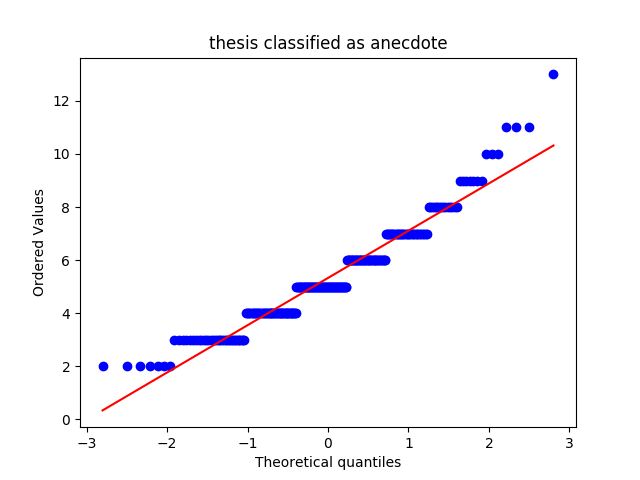
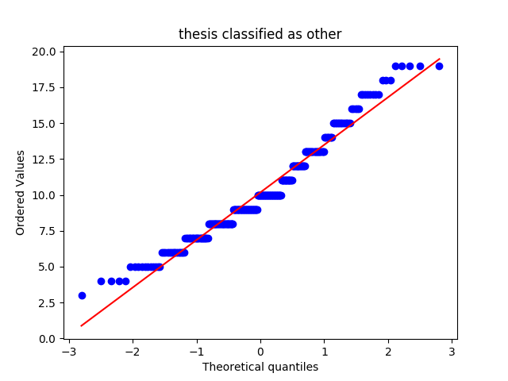
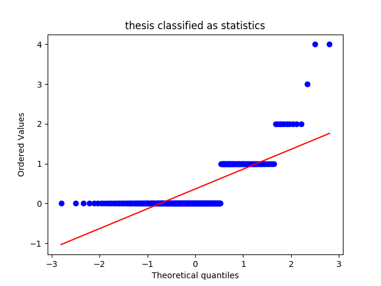
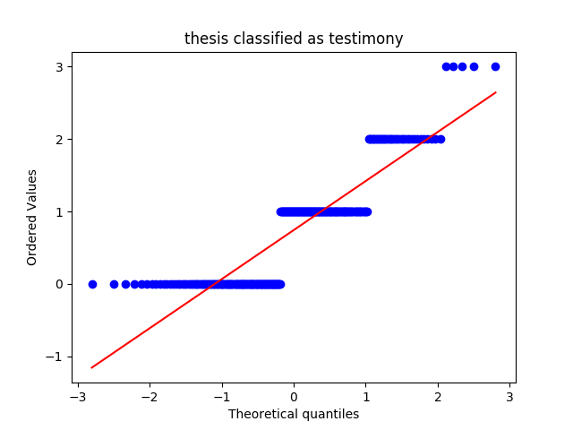
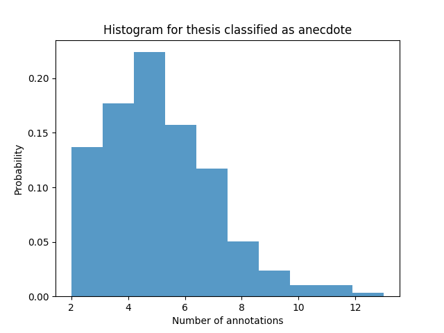
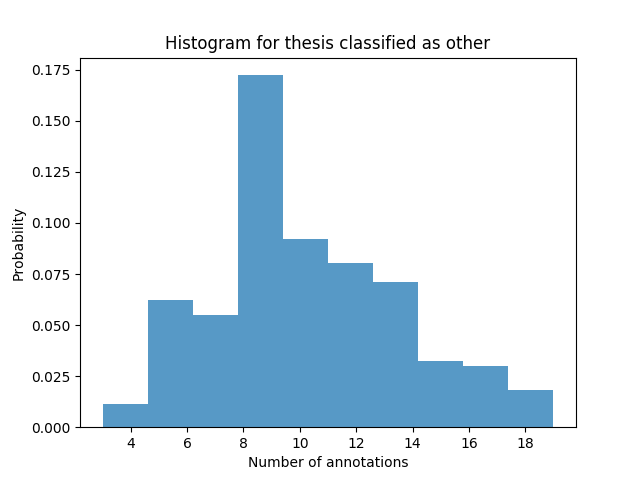
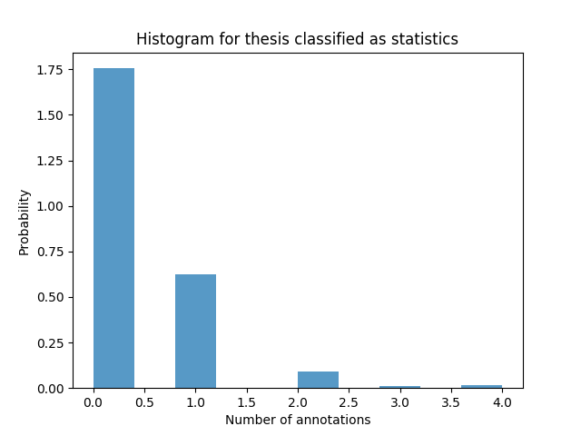
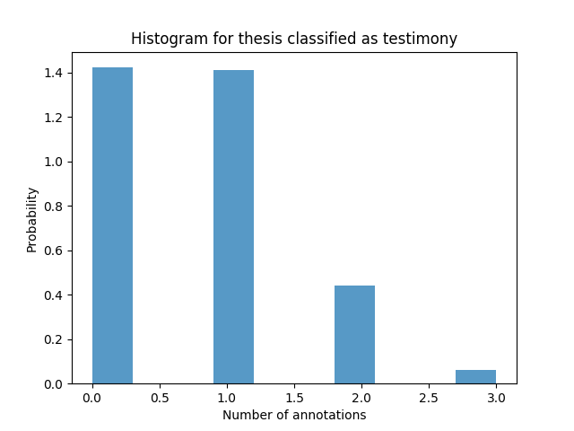
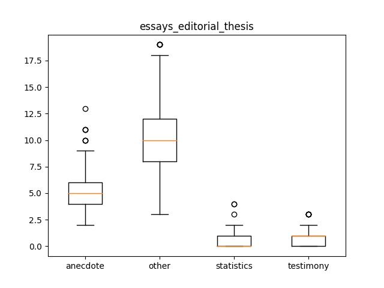

essays_editorial_thesis
Describing the Data-Set
Mean, Median and Standard Deviation
|
anecdote |
other |
statistics |
testimony |
| median |
5.000000 |
10.000000 |
0.000000 |
1.000000 |
| mean |
5.327206 |
10.172794 |
0.363971 |
0.742647 |
| std |
1.822933 |
3.351294 |
0.644453 |
0.752411 |
QQ Plots




Histograms




Box Plot(s)

Normalization Test
stat: 0.939960479736, p-val:4.40945724378e-09
Not Normally distributed for thesis classified as anecdote
stat: 0.96172118187, p-val:1.29791112613e-06
Not Normally distributed for thesis classified as other
stat: 0.59193956852, p-val:7.33622103624e-25
Not Normally distributed for thesis classified as statistics
stat: 0.79567784071, p-val:3.55288714188e-18
Not Normally distributed for thesis classified as testimony
Significancy Test
Using friedmann-test
Using friedmann-test
using stats.friedmanchisquare
chisq: 754.784412563
p-value: 2.76740722957e-163
statistic: 1932.81678886
p-value: 1.11022302463e-16
chi2:715.657720588
ranking[1.3511029411764706, 3.9191176470588234, 1.6525735294117647, 3.0772058823529411]
Post Hoc Analysis (holm_multitest):
------------------------------------------------------
Comparing: anecdote vs statistics
z_value: 15.5923570785
p_value: 0.0
adj_p_value: 0.0
--------------------------------------------------------------------------
Comparing: anecdote vs testimony
z_value: 12.8690913055
p_value: 0.0
adj_p_value: 0.0
--------------------------------------------------------------------------
Comparing: statistics vs other
z_value: 23.1975749081
p_value: 0.0
adj_p_value: 0.0
--------------------------------------------------------------------------
Comparing: other vs testimony
z_value: 20.4743091351
p_value: 0.0
adj_p_value: 0.0
--------------------------------------------------------------------------
Comparing: anecdote vs other
z_value: 7.60521782958
p_value: 2.84217094304e-14
adj_p_value: 5.68434188608e-14
--------------------------------------------------------------------------
Comparing: statistics vs testimony
z_value: 2.72326577304
p_value: 0.00646400336149
adj_p_value: 0.00646400336149
--------------------------------------------------------------------------